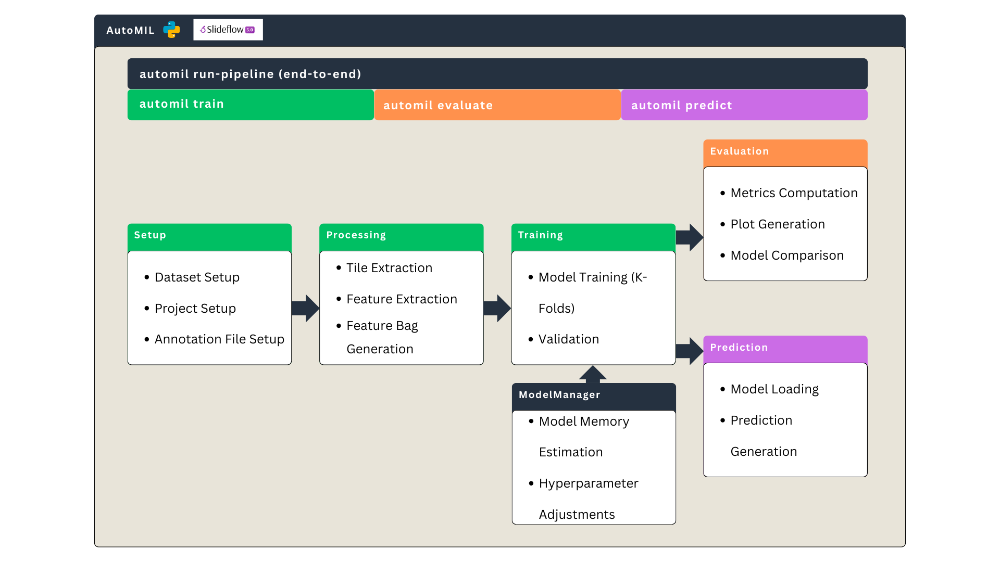

AutoMIL Documentation
AutoMIL is a flexible, open-source, end-to-end pipeline for training and evaluating Multiple Instance Learning (MIL) models for image classification on whole-slide images (WSIs). It provides a modular command-line interface (CLI) that enables straightforward usage and adaptation to diverse WSI datasets. In addition to the CLI, AutoMIL exposes a Python API for programmatic use, allowing users to build their own custom workflows.
Project Repository
The full code is accessible on GitHub
AutoMIL and AutoML
AutoMIL is deeply rooted in the research field of AutoML, focusing on methods and processes to automate the development and deployment of Machine Learning (ML) solutions in order to make them more accessible to the broader public domain without requiring expert knowledge.

Features
- - A well documented and easy to use Command Line Interface
- - A high-level python API for custom development
 - Modular project structure for easy adaptation to new datasets
- Modular project structure for easy adaptation to new datasets - Support for multiple MIL algorithms and model architectures
- Support for multiple MIL algorithms and model architectures- Adaptability to various WSI formats and datasets, including large image sizes and pretiled slides
Quickstart
To get started, go to the Installation Instructions. If you already installed AutoMIL and want to quickly try it out, follow the Quick Start Guide. If you're especially impatient and already have a dataset ready, you can directly jump into training your first model with one of the following commands:
-
automil run-pipeline /dataset annotations.csv /project- Trains and evaluates a model on the dataset located at/datasetwith slide-level labels provided inannotations.csvand saves all outputs to/project. -
automil train /dataset annotations.csv /project- Trains a model on the dataset located at/datasetwith slide-level labels provided inannotations.csvand saves the trained model to/project. -
automil predict /model /slides- Generates predictions on the slides located in/slidesusing the (trained) model located at/model.
Built upon Slideflow
AutoMIL is built on top of the Slideflow framework for WSI data handling and preprocessing. Slideflow provides efficient data loading, tiling, and augmentation functionalities specifically designed for Whole Slide Images, making it an ideal foundation for MIL model training. AutoMILs contribution lies in automating the selection of hyperparamaters, model architectures, and training procedures specifically tailored for MIL tasks on WSI data, as well as providing a single entry-point so the user experience is streamlined.
Project layout
A typical AutoMIL project has the following layout:
project_dir/
|-- tfrecords/ # Directory containing .tfrecords generated during preprocessing
|-- models/ # Directory containing trained model checkpoints
|-- bags/ # Directory containing generated bags
|-- ensemble/ # Directory containing ensemble predictions